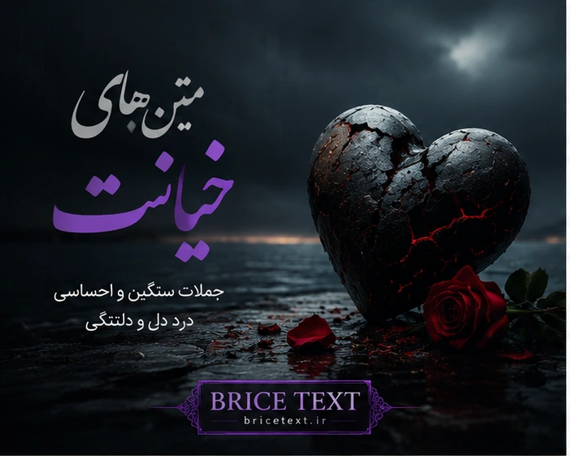

جملات سنگین درباره بیوفایی، اعتماد و دلشکستگی

سختترین درد این نیست که کسی برود؛ سختترین درد این است که بفهمی کسی که ماند، واقعی نبود.
اعتماد مثل شیشه است؛ وقتی شکست، حتی اگر درست شود، جای ترکهایش باقی میماند.
بعضی آدمها با رفتنشان ناراحتت نمیکنند؛ با حقیقتی که از خودشان نشان میدهند، میشکنندت.
خیانت همیشه با رفتن اتفاق نمیافتد؛ گاهی با یک دروغ کوچک شروع میشود.
من از رفتنت ناراحت نشدم؛ از تمام لحظههایی ناراحت شدم که به چیزی غیرواقعی باور داشتم.
بعضی زخمها از نبودن آدمها نیست؛ از شکستن اعتمادی است که با هزار امید ساخته بودی.
گاهی کسی که بیشتر از همه به او اعتماد داری، همان کسی است که بیشتر از همه تو را میشکند.
درد خیانت از رفتن آدمها نیست؛ از این است که بفهمی تمام اعتمادت اشتباه بوده.
من آدمها را از دست ندادم؛ فقط نقاب بعضیها کنار رفت.
بعضیها قلبت را نمیشکنند؛ با دروغهایشان تصویری را که از آنها ساخته بودی خراب میکنند.
سکوت کردم، نه چون چیزی برای گفتن نداشتم؛ چون دیگر چیزی برای باور کردن نمانده بود.
تلخترین حقیقت این است که گاهی غریبهها بیشتر از بعضی نزدیکها قابل اعتمادند.
کسی که یک بار ارزش اعتمادت را نفهمید، لیاقت دوباره گرفتن آن را ندارد.
خیانت فقط شکستن یک رابطه نیست؛ شکستن آرامشی است که با هزار امید ساخته بودی.
بعضی خداحافظیها با رفتن نیست؛ با فهمیدن حقیقت اتفاق میافتد.
من تغییر نکردم؛ فقط دیگر همان آدم سادهای نیستم که همه را باور میکرد.
اعتماد که شکست، فاصله شروع میشود.
بعضی آدمها درس زندگیاند، نه مقصد زندگی.
سکوت من یعنی فهمیدن حقیقت.
دروغ کوتاه است، اما اثرش طولانی.
قلبی که شکست، مثل قبل اعتماد نمیکند.
گاهی رفتن بهترین جواب برای بیارزش شدن است.
همه کسانی که میمانند، وفادار نیستند.
بعضی حقیقتها دیر فهمیده میشوند، اما همیشه واقعیاند.